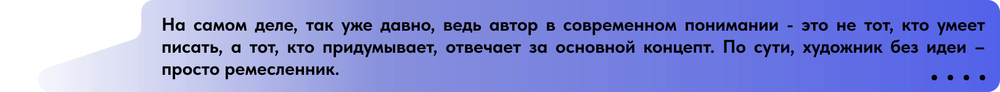

искусство
Искусственный интеллект завладел даже той сферой, в которой не так
важен разум. Возможно ли воссоздать духовное развитие человека, талант
и мастерство в четко прописанной программе?
В искусстве есть свои закономерности. Важно помнить, что существует не
только элитарное (направленное, в первую очередь, на созерцание
необычного, нестандартного, того, что абстрактно выражает человеческая
душа), но и массовое искусство. У него есть свои четкие законы,
направленные на создание таких произведений, которые будут
исключительно приятны и востребованы. В рамках живописи и музыки
человек может получить профессиональное образование. Значит, есть тот
теоретический материал, который повышает понимание структуры
искусства, помогает развивать потенциал и мастерство, помогает
находить способы выражения идей.
Например, чтобы написать популярную музыку, важно не только
вдохновение, но и понимание человеческого восприятия. Следует знать,
что человеческому уху приятно, что его может удивить и что заставит
переслушивать композицию снова и снова. Есть особые музыкальные
законы, некие «рецепты» хороших композиций в разных жанрах. Так же и в
живописи: следуя канонам и правилам, можно создавать настоящие
шедевры.
Художница и дизайнер из Ростова-на-Дону
Виктория Лобко создает свои картины на пару
с искусственным интеллектом. Она выявила механизм работы с ИИ, чтобы
тот вдохновлял художника и помогал ему в процессе создания картины:
«Конечно, нельзя сказать, что искусственный интеллект делает все
сам, первоначально посыл идет именно от человека. Вы придумываете
сюжет, стилистику, цветовую гамму, машина же все это обрабатывает и
предлагает разные вариации. После можно играть с картинками как душе
угодно» , – рассказала она «Комсомольской правде». Художница считает, что
основная задача автора – сгенерировать идею, и, если ее воплощает в
жизнь искусственный интеллект – итог можно назвать искусством:

Ифтихар Аббасов, профессор, завкафедрой
инженерной графики и компьютерного дизайна Института радиотехнических
систем и управления ЮФУ, рассказал университету о работе
искусственного интеллекта в живописи. Сейчас ИИ учится самостоятельно
мыслить и создавать что-то абсолютно новое, исходя из полученного
опыта. Однако пока в созданных им картинках
«отсутствует некая неуловимая «душевность» картины, вложенная
художником-творцом», – отметил Ифтихар Аббасов.
Юлия Гадзиян, доцент кафедры дизайна ЮФУ,
считает, что ИИ не может считаться
«самостоятельной творческой единицей».
Результаты художественной деятельности должны быть полны искренних
душевных порывов, личных переживаний, того, чем обладает только
человек:
Литература тоже имеет свои закономерности, но мы привыкли к тому, что
лишь наличие особенного поэтического или прозаического таланта
обеспечит автору и его произведениям литературную славу и истинную
ценность. Существует множество нейросетей, которые могут писать
тексты, в том числе стихотворения. Стоит ввести запрос, и ИИ выдаст
уникальное произведение, при этом времени он потратит на него
значительно меньше, чем человек. Никаких чувств – только алгоритмы.
Литературное течение импрессионизм напрямую связано с чувством. Здесь
есть правила, но сама основа, фундамент этого направления в искусстве
– чувство. Может ли искусственный интеллект создать импрессионистское
произведение?
С определением творчества всегда связаны духовные ценности.
Возможно ли привить и развить в искусственном интеллекте способность
передавать то, что чувствуешь, делиться собственным восприятием мира
– если это программа, а не действующий по наитию человеческий порыв?